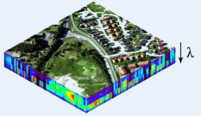
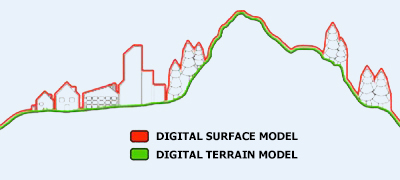

Earth Observation Essentials
Table of Contents
- 1. Introduction
- 2. Types of Earth Observation Imagery
- 2.1 Passive imagery
- 2.1.1 Panchromatic
- 2.1.2 Multi-spectral
- 2.1.3 Pan-sharpened
- 2.1.4 Hyper-spectral
- 2.1.5 Microwave Radiometry
- 2.2 Active imagery
- 2.2.1 Synthetic Aperture Radar
- 2.2.2 Lidar
- 2.2.3 Radar Altimetry
- 2.2.4 GNSS-R
- 2.2.5 Radar Scatterometry
- 2.3 Atmospheric Chemistry
- 2.4 Gravity field measurements
- 2.5 3D Models
- 2.6 Data Processing
- 3.Parameters Related to EO Imagery
- 3.1 Spatial Resolution
- 3.2 Scene size
- 3.3 Revisit time
- 3.4 Other image quality-related parameters
- 3.5 Accessibility of EO Products
- 4.List of Remote Sensing Satellite Systems
- 5.Pricing Policy
- 6.How to Access Data
- 7.Future Trends
- 8.Reference Sources
- 9.Useful Links
- 10.Acronyms
1. Introduction
The aim of this guide is to help non-experts in providing a starting point in the decision process for selecting an appropriate Earth Observation (EO) solution. EO is defined as the process of acquiring observations of the Earth’s surface and atmosphere via remote sensing instruments. The acquired data is usually in the form of digital imagery. Earth’s surface can be observed from different platforms, each presenting its own advantages and limitations. Aerial platforms, for instance, generally provide the best resolutions and are very adjustable to the users’ needs, but the high cost of chartering a plane and paying the related manpower (pilots and technicians) restricts its use. Drones, also called Remotely Piloted Aircraft Systems (RPAS), are a fast-growing technology that tackles this cost problem, but regulations and their low carrying capacity currently limits their range of activity. On the other hand, satellites allow for reliable, true global coverage even above the most remote locations enabling regular repeat observations.
This document focuses primarily on operational applications of Earth Observation data. Many other science applications are also possible.
2. Types of Earth Observation Imagery
In this section, a classification of the different kinds of available Earth Observation imagery is proposed. The main distinctions are made on the nature (passive or active) of the sensing instrument providing the image and on the wavelength of the electromagnetic spectrum in which the observation is made. The electromagnetic transparency of the atmosphere, as illustrated in Figure 1, allows for the observation of Earth’s surface in the visible spectrum (0.39 to 0.70 μm), in a part of the infrared spectrum (from 0.70 to 14 μm) and in the radio wave range (from 1 cm to 11m).
2.1 Passive imagery
In passive imagery systems, sensors are designed to detect electromagnetic emissions from constituents of the Earth's surface and atmosphere. These emissions can be locally produced (e.g. thermal radiation from vegetation in the infrared spectrum) or be the result of reflected sunlight in the visible spectrum. Hence, passive imagery is usually dependant on the day-night cycle and can be degraded or blocked by perturbations coming from unwanted sources of emissions or cloud cover.
Figure 1: Atmospheric electromagnetic transparency (Source: http://commons.wikimedia.org/wiki/File:Atmospheric_electromagnetic_opacity.svg)
2.1.1 Panchromatic
Panchromatic images are the result of the measure of light intensity over a broad range of the electromagnetic spectrum. Collecting light from a wide range of wavelengths allows for more energy being collected and hence high resolution images (up to 30 cm in resolution for the best commercially available satellite instruments).
A standard example of panchromatic measurement will measure the light intensity coming from the observed scene in the full visible spectrum. This measurement would typically cover wavelengths between 0.47 and 0.83 μm. The resulting product is generally an image displayed as shades of grey, such as presented in Figure 2.
Figure 2
Another example of panchromatic measurement is done by thermal infrared sensors, at wavelengths between 10 and 12 μm. The intensity of the IR radiation reaching the satellite is directly correlated with the temperature of the object emitting that radiation. Regions where the ground or the ocean is warm will emit the most intense radiation.
Because IR is constantly emitted by the Earth and by clouds, it is possible to obtain IR satellite imagery even when the scene is not illuminated by the sun. In contrast, visible satellite imagery which relies on sunlight reflected up to the satellite can only be obtained during the daylight hours.
2.1.2 Multi-spectral
Multi-spectral imagery denotes the remote sensing of an observed scene in several narrow bands of the electromagnetic spectrum. Since the range of wavelengths contributing to the radiation energy detected by the sensor is reduced, multi-spectral instruments will typically have to collect energy on larger spatial extents to “fill” the imaging detector, resulting in a lower resolution than for panchromatic images.
A common example of multi-spectral images is the production of “natural colour” images by the combination of measurements in 3 bands of the visible spectrum (narrow bands centred around the blue, green and red wavelengths), in the same way as is done in classical consumer cameras. See Figure 3 (left-hand side) for an example of a "natural colour" image.
Multi-spectral images are not restricted to the visible spectrum: measurements can be done in the infrared (IR) fields, ultraviolet (UV), microwave, etc. Figure 3 (right-hand side) presents an example of a "false colour" image, combining the green band (displayed in the blue component of the image), the red band (displayed in the green component of the image) and a near infrared band (displayed in the red component of the image). This visualisation combination allows highlighting the presence and health of the vegetation: healthy vegetation creates chlorophyll which reflects near-infrared energy, and therefore appears in darker red on the image.
Figure 3: 3-band multi-spectral imagery
Many other combinations of wavelength bands are possible, depending on the information to be extracted. For example:
- Shortwave infrared (red), near infrared (green), and green (blue):
often used to show floods or newly burned land - Blue (red), two different shortwave infrared bands (green and blue):
used to differentiate between snow, ice, and clouds - Blue (blue), near infrared (green), mid infrared (red):
used to picture on one image water depth, vegetation coverage, soil moisture content, and the presence of fires
Pan-sharpening is a numerical process that merges multi-spectral images with panchromatic images to provide high resolution coloured images. This technique is useful to perform image analysis combining the spectral resolution of multi-spectral images with the improved spatial resolution of panchromatic images. This is illustrated in Figure 4.
Figure 4: Example of Pan-Sharpening
|
 |
| Figure 5: Example of Hyperspectral Data Product |
Hyperspectral imagery aims at obtaining a nearly-continuous spectrum for each pixel in the image of a scene, extending the benefits of multi-spectral imagery, which measures light intensity on a limited number of separate bands of the electromagnetic spectrum. Figure 5 provides an example of representation of a hyperspectral data product, each layer of the cube picturing the same 2D scene observed in one specific wavelength λ, allowing for more detailed and accurate analysis of the observed features.
For each pixel, a hyperspectral sensor acquires the light intensity for a large number (typically a few tens to several hundred) of contiguous narrow spectral bands. To every pixel in the image is thus attached a nearly continuous spectrum. The high spectral resolution of a hyperspectral imager allows for detection, identification and quantification of surface materials, as well as inferring biological and chemical processes.
Hyperspectral Earth Observation is for now mainly limited to aerial imagery and scientific demonstration missions.
In addition, MWR measurement data are useful for the determination of surface emissivity and soil moisture over land, for surface energy budget investigations to support atmospheric studies, and for ice characterisation.
The main objective of the Microwave Radiometer (MWR) is the measurement of the integrated atmospheric water vapour column and cloud liquid water content, as correction terms for the radar altimeter signal (see Section 2.2.3 Radar Altimetry).
In active imagery systems, instruments are composed of a transmitter that sends out a specific electromagnetic signal and of a sensor receiving the interaction of the signal with the Earth’s surface. Such observations are not dependent on solar illumination.
2.2.1 Synthetic Aperture Radar
The most common active sensor used for Earth Observation is the Synthetic Aperture Radar (SAR). This instrument transmits electromagnetic pulses towards the Earth’s surface where they are reflected or scattered by the surface features. The instrument’s antenna can detect and record the return pulses. The intensity of the return pulse and the time it takes to arrive back at the antenna are used to generate SAR imagery.
The main advantage of radar imaging is that it is insensitive to the day/night cycle and most of the time to the meteorological conditions (shorter wavelength signals such as X-band can be degraded by heavy intense rain cells). The selected radio band impacts what is observed from the scene by influencing the level at which the incident radiation will backscatter.
Applications include (for instance) ship detection, oil spill detection, sea ice monitoring (see Figure 6), forest monitoring, soil moisture, critical infrastructure, etc.
Figure 6: Example of SAR imagery for monitoring formation of Icebergs (Source: ESA ENVISAT)
By using a technique known as SAR interferometry, highly accurate measurements of geophysical parameters such as surface topography, ground deformation and subsidence and glacier movements can be made. In SAR interferometry, the phase of two or more complex radar images are compared that have been acquired from slightly different positions or at different times. Since the phase of each SAR image pixel contains range information that is accurate to a small fraction of the radar wavelength, it is possible to detect and measure path length differences with centimetric or even millimetric precision.
With across-track interferometry the radar images are acquired from mutually displaced flight tracks , enabling (for instance) a precise measurement of the surface topography. By using an external DEM, the topographic information can be subtracted from the interferogram, leading to a differential SAR interferometric measurement where subtle (mm) changes of the range distance between the two acquisitions (e.g. due to subsidence) can be detected. Further potential is possible by comparison of the coherence between several data acquisitions, which can be used for land classification and change detection.
With along-track interferometry, the radar images are acquired from one and the same flight track but at different times, enabling (for instance) the observation of ocean surface currents.
Lidar (Light Detection And Ranging) EO uses the same principle as SAR but works in the IR, visible or UV wavelengths. Lidars are used for precise measurement of topographic features, monitoring growth or decline of glaciers, profiling clouds, measuring winds, studying aerosols and quantifying various atmospheric components.
The Atmospheric Lidar ATLID on ESA’s EarthCare mission will provide vertical profiles of aerosols and thin clouds. It operates at a wavelength of 355nm and has a high-spectral resolution receiver and depolarisation channel.
The Atmospheric Laser Doppler Lidar Instrument ALADIN on ESA’s Aeolus-ADM mission will measure Line-of-Sight wind profiles at different levels in the atmosphere from the troposphere to the lower stratosphere with vertical resolution of 250 m - 2 km. It operates at a wavelength of 355nm, with spectrometers for molecular Rayleigh and aerosol/cloud Mie backscatter. ALADIN will be the first wind lidar in space to obtain aerosol/cloud optical properties (backscatter and extinction coefficients).
|
|

Radar altimeters are active sensors that use the ranging capability of radar to measure the surface topography profile along the satellite track. They provide precise measurements of a satellite's height above the ocean by measuring the time interval between the transmission and reception of very short electromagnetic pulses.
Radar altimeter measurements can infer various parameters, including time-varying sea-surface height (ocean topography), the lateral extent of sea ice, the altitude of large icebergs above sea level, the topography of land and ice sheets, and even the sea floor, while satellite altimetry also provides data for mapping sea-surface wind speeds and significant wave heights.
Jason-3 and Jason-CS (Sentinel 6) are contributing radar altimetry missions of the Copernicus programme, which will provide the continuity of critical high precision observations of ocean surface topography until 2030+, in full synergy with the marine mission of the Copernicus Sentinel 3.
Figure 7: Altimetry-derived mean dynamic topography
|
|

GNSS reflectometry (GNSS-R) is a relatively new category of satellite navigation applications which entails a method of remote sensing to receive and process microwave signals reflected from various surfaces to extract information about those surfaces.
In this process, the GNSS satellite acts as the transmitter and an airplane or Low Earth Orbit (LEO) satellite as the receiving platform. For altimetry applications, a GNSS-R receiver can also be placed on the land.
An advantage of GNSS-R remote sensing is the ubiquity of signal sources, including GPS, Galileo, GLONASS, and Beidou/Compass.
A wide range of applications is possible such as wide-swath altimetry, sea-wind retrieval, and measurement of seawater salinity and ice-layer density, as well as humidity measurements over land.
Figure 8: Starlab GNSS-R Sensor Oceanpal for monitoring lake level in ESA Applications project.
 |
A radar scatterometer is a microwave radar sensor used to measure the reflection or scattering effect produced while scanning the surface of the Earth from an aircraft or a satellite. It provides a measure of wind speed and direction near the sea surface.
The radar scatterometer measures the backscatter from small (cm) waves at the sea surface, at skew incidence angles. From these sea roughness measurements the wind vector at 10 m height is calculated. Radar scatterometer data are important sources of information for Numerical Weather Prediction and oceanography.
Radar scatterometers can also provide information such as sea ice cover. Sea ice typically reflects more of the radar energy emitted by the sensor than the surrounding ocean, so it appears brighter in a radar scatterometer image.
Figure 9: Composite radar scatterometer image of Antarctica, 19 July 2003, from the QuikSCAT satellite (Source: David Long, Brigham Young University Center for Remote Sensing, https://nsidc.org/cryosphere/seaice/study/active_remote_sensing.html)
2.3 Atmospheric Chemistry
Atmospheric Chemistry can be monitored using a range of EO instruments using various techniques and different parts of the electromagnetic spectrum. Each atmospheric gas is characterised by its “absorption” and “emission” spectra, which describe how the molecules respond to different frequencies of radiation. EO remote sensing instruments exploit these “signatures” to provide information on atmospheric composition, using measurements over a range of wavelengths between UV and microwave.
Atmospheric absorption tends to be dominated by water vapour, carbon dioxide and ozone, with smaller contributions from methane and other trace gases. Relatively broadband instruments can be used for measurements of the dominant gases, but high spectral resolution sensors are needed to make measurements of other species since they produce weaker signals and these must be discriminated from the signals of more abundant gases.
Atmospheric Chemistry instruments are typically operated in either nadir-viewing mode looking vertically directly down to measure the radiation emitted or scattered, or in a limb-viewing mode that scans positions beyond the horizon to observe paths through the atmosphere at different altitudes. Nadir-viewing instruments provide high spatial resolution in the horizontal direction but limited vertical resolution, whereas limb-viewing instruments provide a high vertical resolution (a few km) but limited horizontal resolution (tens of km at best).
Atmospheric Chemistry sensors may be either Active or Passive. Some examples of Active atmospheric chemistry sensors are atmospheric lidars (c.f. 2.2.2 Lidar), whereas examples of Passive atmospheric chemistry sensors are imaging spectrometers, multispectral radiometers, solar occultation sensors and microwave limb sounders.
2.4 Gravity field measurements
Gravity field measurements from space rely on one of three types of techniques:
- Use of single or multiple accelerometers on one or more satellites to derive gravity or gravity gradient information.
- Precise satellite orbit determination (using satellite to ground navigation systems and satellite laser ranging systems), and separation of satellite motion induced by the Earth’s gravitational force from other forces such as solar radiation and aerodynamic drag.
- Satellite-to-satellite tracking (e.g. by GPS or microwave link) to measure the relative speed variations of two satellites induced by gravitational forces.
Gravity field measurements from space provide significant advances for improved measurement of the “geoid” and its time variations. The geoid (the surface of equal gravitational potential at mean sea level) reflects the irregularities in the Earth’s gravity field at the surface due to the inhomogeneous mass and density distribution in the Earth’s interior.
More accurate models of the mean geoid and its temporal variability are important for applications such as for making measurements of absolute ocean currents, their transport of heat and other properties, for providing estimates of the thickness of polar ice sheets and their variations, and for making estimates of the mass/volume redistribution of freshwater in order to further understand the hydrological cycle.

Figure 10: First Global Gravity Model from ESA’s GOCE mission (Source: http://www.esa.int/spaceinimages/Images/2010/06/GOCE_first_global_gravity_model)
2.5 3D Models
EO data can also be processed in order to produce 3D models of the Earth’s surface. 3D models are used for many applications, such as military operations, flight simulator development, disaster management, mapping of buildings, updating and keeping cadastral databases current, change detection and virtual reality (see for instance http://www.satimagingcorp.com/applications/engineering-and-construction/3d-city-and-urban-modeling/).
Several types of processes are available. Images of a scene taken from different points of view can be combined in order to reconstruct depth information. Figure 11 illustrates this stereoscopic technique with 2 (Stereo) or 3 (Tri-Stereo) images taken from different angles. SAR and Lidar instruments also provide altitude information that can be used to help build 3D surface models.
Figure 11: Illustration of Stereoscopic techniques
As stated in Section 2.2.1 Synthetic Aperture Radar, the technique of across-track SAR interferometry can also be used to generate 3D surface models.
|
 |
| Figure 12: Distinction between DSM and DTM (Source: geoimage.com.au) |
A distinction is made between Digital Surface Models (DSMs), which represent the Earth's surface with all objects on it, and Digital Terrain Models (DTMs), which represent the bare ground surface without any objects like plants and buildings (see Figure 12). Another terminology, Digital Elevation Model (DEM), is also frequently encountered and can refer to either DSM, DTM or both of them, no convention being commonly accepted.
2.6 Data Processing
When acquired by satellite sensors and downloaded to ground stations, data are in a raw format. EO products can then be bought by the customer, with or without a wide range of different types of pre-processing. Some applications might require raw and unaltered data coming from the instrument, while most use cases will benefit from different treatments improving the interpretability of the EO data. Image providers usually define several levels of treatment combining different processes, and charged at different prices, for example:
- Various radiometric corrections: sensor irregularities correction, defective pixels identification, etc.
- Atmospheric corrections
- Scene classification, land/water masks generation
- Dynamic range adjustment: adjust contrast and brightness in the image
- Ortho-rectification: remove sensor/satellite motion and terrain-related geometric distortions to obtain map-suitable images
3. Parameters Related to EO Imagery
While considering an Earth Observation product, a set of parameters can be defined that will distinguish the capacities provided by different EO satellite systems. The choice must then be done based on the EO User needs. The aim of this section is to provide basic keys to understanding these parameters, in order to facilitate the EO product ordering decision process.
3.1 Spatial Resolution
The spatial resolution of an image is one of the key parameters as it relates to the level of detail that can be retrieved from a scene. Image resolution can be measured in several ways; one of the most common, the Ground Sample Distance (GSD), is the distance between adjacent pixel centres measured on the ground. The lower this number is, the finer the detail that can be interpreted from the image.
It’s commonly considered that low resolution images have a GSD larger than 300 m. Medium resolution is between 300 m and 30 m, high resolution from 30 to 5 m and very high resolution (VHR) below 5 m. Following the performances of the recently launched commercial satellites, a new “very very high" resolution category could be distinguished for resolutions below 1 m. The best commercially available imagery has 30 cm spatial resolution (see Figure 13 for an example).
Spatial resolution selection is mainly driven by the envisaged application for the EO product. High resolution images will be required for instance to collect data for high precision agriculture, while lower resolutions are enough for applications such as weather forecasting, study of regional vegetation coverage or wide-area weather and cloud patterns.
Another factor influencing this choice is the size of the scene to observe. High-resolution imagery is more expensive and produces files of large size. High resolution is generally used for areas of interest smaller than 100 square kilometres.
Figure 13: Example of image with 30cm spatial resolution (Source: Digital Globe http://microsites.digitalglobe.com/30cm/)
The National Imagery Interpretability Rating Scale (NIIRS) is used as a standard to quantify the interpretability or usefulness of an image. This "rating" scale, originally inspired by the military to qualify aerial imaging, runs from 0 (worst quality) to 9 (best quality). An excerpt is presented in Figure 14, which also provides an approximate relation between NIIRS scale and GSD (GSD being one of several factors influencing the interpretability of an image).
| NIIRS Scale | GSD (approx.) | Visible | Radar | Multispectral |
|---|---|---|---|---|
| 1 | > 4.5 m | Distinguish between taxi-ways and runways at a large airfield | Detect a large cleared swath in a densely wooded area | Distinguish between urban and rural areas |
| 3 | 2.25 - 4.5 m | Distinguish between types of houses, boats, etc. | Detect large buildings | Identify urban road network pattern |
| 3 | 1.25 - 2.25 m | Identify a large surface ship in port by type | Detect medium-sized aircraft | Identify major street patterns in urban areas |
| 5 | 0.37 - 0.6 m | Identify radar as vehicle-mounted or trailer-mounted | Count all medium helicopters | Detect ditch irrigation of beet fields |
| 6 | 0.30 - 0.45 m | Identify equipment on a recreational vehicle | Distinguish between two adjacent parked cars | Detect localized damage to crops |
| 7 | 0.10 - 0.20 m | Identify individual rail ties | Detect road/street lamps in an urban residential area | Distinguish individual rows of crops |
| 9 | < 0.05 m | Identify vehicle registration numbers (VRN) on trucks | Identify trucks as cab-over-engine or engine-in-front | Identify individual tree canopies |
Figure 14: Excerpt of NIIRS scale related to GSD (Source: http://fas.org/irp/imint/niirs.htm)
3.2 Scene size
The size of the scene to be observed is another important parameter. Earth Observation sensors onboard satellites are characterised by their swath width. The swath of an instrument is the width of the strip on the ground it can image when the satellite orbits around the Earth. The swath depends on the features of the instrument and on the orbit of the satellite. Generally, the higher the spatial resolution, the lower the swath of the instrument. As an example, the very high-resolution (0.46 m) instrument onboard Worldview-2 has a 16.4 km swath, while Sentinel-2 can image strips 290 km wide with a 5 m spatial resolution.
To cover large areas, VHR imagery requires a large number of images, which has an impact on the data volume to be managed and on the acquisition cost. Therefore, a trade-off analysis between resolution and cost needs to be performed before ordering satellite images.
Most EO product providers offer online graphical interface tools to select the area of interest, choose the EO products and the satellite system, and request archive images or task new acquisitions. Satellite operators will then generate the operation plan of the satellite based on optimised number of strips, satellite passes, area of interest, etc to satisfy the request and provide a price quotation.
Operators generally require a minimum area to be ordered (typically 100 square kilometres for VHR imagery).
3.3 Revisit time
The need for Earth Observation data can be "punctual" (e.g. preparing a road maintenance operation in a remote area), "punctual & urgent" (e.g. assessing flooded areas after a tsunami) or "periodic" (e.g. monitoring crops). The revisit time of a satellite system (i.e. the time elapsed between subsequent observations of the same area of interest) is a decisive factor of choice. This parameter is closely linked to the type of orbit of the satellites.
Most EO satellites are in specific low Earth polar orbits called "Sun-Synchronous Orbits (SSO)", whose altitude and inclination are precisely calculated so that the satellite will observe, over time, the same scene with the same angle of illumination coming from the Sun. This kind of orbit typically has an altitude of around 700 km and an inclination of 98˚. Due to this high inclination, the revisit time for a satellite will be longer for equatorial areas than for polar regions.
Two different definitions can be given to the revisit time. From the point of view of the satellite, the revisit time is the elapsed time before the satellite retraces its path, passing over the same exact point on the ground surface. From the point of view of an EO user, the revisit time is defined as the length of time to wait for the satellite system to be able to observe the same point on Earth.
The difference between these two definitions originates from the "agility" feature of most EO satellites, i.e. the ability of a satellite to modify its attitude in order to observe scenes outside its ground trace (see Figure 15 for different acquisition strategies). To further reduce the revisit time, EO constellations can be used: augmenting the number of satellites in orbit lowers the waiting time between observations of a same scene.
Figure 15: Different acquisition strategies using the agility of an EO satellite
As an example, the two Pléiades constellation satellites on a SSO are able to acquire images in a +/- 30˚ corridor around their ground trace: while the periodic cycle of their orbits is 26 days, the agility of the satellites combined with the phased orbit of the constellation offer a 2 day revisit for any point on Earth.
It is worth noting that some EO satellites are in Geostationary Earth Orbits (GEO). At an altitude of approximately 36,000 km above the equator, they have an orbital period equal to the Earth’s rotational period (one day), which allows them to constantly observe the same portion of the Earth’s surface. Seen from ground observers they occupy a fixed position in the sky. The revisit time is therefore effectively zero. Meteosat satellites are able to scan the full earth disc every 15 minutes. The resolution of these images are, however, typically much lower than for SSO satellites due to the very high altitude of the GEO.
In practice, when ordering the acquisition of new images from an EO satellite, a feasibility assessment is conducted to estimate the turn-around time. Some areas can have a high demand for imagery (important backlog) or persistent cloud cover, which can prolong the effective revisit time.
3.4 Other image quality-related parameters
The quality and usefulness of an EO image is governed by several parameters.
Bit depth
When an instrument is imaging an area, each pixel is coded on a certain number of bits (typically from 8 to 16 bits) per band. In practice, this relates to the number of nuances that can be recorded: an 8-bit instrument will make the distinction between 28=256 colours whereas a 12-bit instrument will measure the intensity according to a scale of 212=4,096 nuances. Improved bit depth, also called radiometric resolution, aids the ability to discern detail in an image’s brightest and darkest (shadow) areas.
Off-nadir angle
In practice, very high-resolution satellite sensors generally do not collect images at nadir, i.e. looking straight down at the target, but acquire images at an angle. Satellite operators report this as the "off-nadir angle" where 0 degrees would be looking straight down. For optical imagery, a typical maximum is an off-nadir angle of 30 degrees.
A lower off-nadir angle often is desirable, especially in areas of high relief or tall buildings to minimize the so-called "building-lean" effect (see Figure 16). This problem is inherent in remote sensing, as we attempt to accurately represent the three-dimensional surface of the Earth as a two-dimensional image. Objects directly below the centre of the camera lens (i.e. at the nadir) will have only their tops visible, while all other objects will appear to lean away from the centre of the photo such that their tops and sides are visible. If the objects are tall, are far away from the centre of the photo, or if the off-nadir angle is large, the distortion and positional error will be larger.
Sun-elevation angle
Another parameter to take into account is the angle of the sun above the horizon. Imagery collected with low sun elevation angles may contain data that are too dark to be usable. This will be more pronounced in high-relief areas and areas with taller objects, such as trees and buildings, where low sun elevation angles mean longer shadows will be cast. A typical minimum Sun elevation angle is 30 degrees.
Due to the fact that most EO satellites are in Sun-Synchronous Orbits, there is little control over the time of day an area of interest is imaged. This is typically set to around 10:30 AM for optical imagery, or 6:00 AM for active imagery (dawn-dusk orbits).
Cloud cover
Optical imagery will be perturbed by the presence of clouds above the area of interest. When buying archived imagery, operators provide a reduced-resolution preview graphic ("quicklook") to check if no clouds are concealing the area of interest on the image before purchasing it. When ordering new observation tasking, the customer can ask for a maximum percentage of cloud cover. Customers receive an estimated time window for the acquisition, which maximises the probability of obtaining a cloud-free image. If the observation is unsuccessful, satellite operators can propose another time-window or the acceptance of the acquired images.
3.5 Accessibility of EO Products
The most economical choice of EO Products consists in buying archive images. These have been previously recorded, are present in the database of the EO provider and can be bought as such or be combined to shape the area of interest.
If no images of the area of interest can be found or if there is no EO product available satisfying the user needs (acquisition date, clouds, resolution…), new observation tasking can be ordered, at a higher cost. The new instructions will be added to the scheduling of the satellite. Depending on the priority of the task and in agreement with the customer, delays can apply (typically 30 to 60 days).
EO products, especially for high resolution and multi-spectral band images, generally are data heavy files (e.g. around 1 Gb for a 100 km2, colour, 3 bands, 50 cm resolution). These files can be delivered online (ftp downloading, the most common) or via physical media delivery (DVD, HDD or USB key depending on the size of the product).
Most EO products will be bought through the fully developed commercial market and well established EO product providers. It is, however, possible to get some EO data free of charge through institutional channels (see for example the European Copernicus programme that offers free and open access to Sentinel satellites data or the USGS Landsat programme).
Sensitive areas (military theatres, high-security facilities…) might be subject to restrictions imposed by national governments, especially for high resolution images. EO providers may have to seek governmental approval before acceding to a new tasking order.
4. Some Commonly Used EO Satellite Systems
An overview of some of the more commonly used EO satellites in terms of spatial resolution and revisit time is shown in Figure 17.
Figure 17: Spatial Resolution vs Revisit Time for various example satellites (Source: Satellite Applications Catapult 2017, adapted from EO21 Project).
This has been created for information only. It gathers an arbitrary selection of representative EO satellites and their main parameters. This does not constitute in any way a recommendation for any of the satellites shown.
5. Pricing Policy
Providing average prices for Earth Observation products is difficult. The acquisition cost of an image depends on a large number of factors: the image provider, the satellite, the resolution of the image, if it is an archive or a new acquisition, the size of the scene, the demand for this area, the number of images, etc. Moreover, prices catalogues publicly available are most of the time indicative. Real prices might be lower and be negotiated if the image provider is contacted directly.
Cost and nature of payments can also depend on the proposed business case. For example, a fire-monitoring application using EO data and running for several years might be able to negotiate lower prices and establish a different cost model than pay per image.
Surcharge may apply for additional processing treatment of images, emergency tasking of a satellite, selection of hard drive as a delivery means, etc. Discounts may apply when tasking over an area of lesser interest (e.g. over the oceans), and when ordering a certain number of images over a long period of time, etc.
6. How to Access Data
Earth Observation data can be acquired through different channels. Free of cost data is generally provided by public agencies, under potential conditions linked to the application envisaged and the nationality of the entity requiring access. Data can also be bought from private companies operating commercial satellites, or by their numerous certified resellers.
This non-exhaustive list has been created for information only. It gathers an arbitrary selection of representative EO images providers. This does not constitute in any way a recommendation for any of the companies listed.
Public EO Data Providers
Commercial EO Data Providers
| Digital Globe resellers |
http://www.digitalglobe.com/partners/certified-resellers |
| Airbus | https://www.intelligence-airbusds.com/access-to-our-products/ |
| Deimos | https://www.deimos-imaging.com/imagery-store/ |
| Planet Labs | https://www.planet.com |
| Urthecast | https://www.urthecast.com |
| MDA Geospatial Services |
http://gs.mdacorporation.com/Partners/Partners.aspx |
| E-geos | http://www.e-geos.it/index.html |
| Satellite Imaging Corporation |
http://www.satimagingcorp.com/ |
| CGG | http://www.cgg.com/default.aspx?cid=7450 |
| European Space Imaging |
http://www.euspaceimaging.com/ |
| Land info | http://www.landinfo.com/ |
| Precision Hawk | https://www.precisionhawk.com/satellite |
| Apollo Mapping | https://apollomapping.com/ |
| GHGSat | https://www.ghgsat.com/ |
In the case of the Sentinel EO satellites, developed by ESA for the European Commission’s Copernicus programme, access to data is provided through multiple channels:
- The Copernicus Open Access Hub provides free and open access to a rolling repository of Sentinel user products. A simple and fast registration is required to create an account, before getting free access to the Sentinel data. The data access is configured to avoid saturation resulting from massive downloads by a limited number of users (e.g. maximum number of parallel downloads, maximum volume per retrieval).
- A collaborative ground segment is also in development in several member states (e.g. http://sentinels.space.noa.gr/ (Greece) or http://sedas.satapps.org/ (UK)). It is intended to allow complementary access to Sentinel data and/or to specific data products by establishing additional pick-up points (e.g. mirror sites). It is composed of elements funded by third parties (i.e. from outside the ESA/EU Copernicus programme).
- Copernicus Space Component Data Access (CSCDA) is restricted to users eligible to Copernicus Services, as defined by the European Commission (e.g. institutions and bodies of the EU, participants to a research project financed under the EU research programmes, international organisations and NGOs...). Access is provided with committed performances, together with possibilities to order specific tasking of the satellites participating in Copernicus.
7. Future Trends
In recent years some new trends have started to develop in the field of Earth Observation.
The sector is moving from using a few large, complicated and costly EO satellites to establishing constellations of numerous small and cheap satellites. The focus is changing from increasing spatial resolution to the search for better coverage and revisit time, with the aim of providing near-real time Earth Observation monitoring for all. Ever increasing amounts of data are being produced and Earth Observation, which once was restricted to a limited subset of highly trained users, is becoming more accessible and ubiquitous. Following the entrance of new actors, prices are anticipated to decrease in the coming years. The business model of EO providers is also expected to evolve from the selling of data (e.g. EO images of shopping mall car parks) to the selling of intelligent information (e.g. daily report on the affluence to the shopping mall, measured by counting the number of cars in the car parks).
Opportunities will further arise with the advent of new technologies such as new types of sensor, video from space, reconfigurable payload technologies offering greater in-orbit flexibility, etc
8. Reference Sources
The realisation of this guide has been done using many sources of information publicly available on the internet and listed hereunder, additionally to the ones cited in the text:
http://www.esa.int/Our_Activities/Observing_the_Earth
http://www.esa.int/Our_Activities/Observing_the_Earth/Copernicus/Altimetry_missions
https://sentinel.esa.int/web/sentinel/user-guides
http://www.dlr.de/eoc/en/desktopdefault.aspx/tabid-5354/10125_read-21375/
https://www.nasa.gov/directorates/heo/scan/communications/outreach/funfacts/index.html
http://www.atmos.washington.edu/weather/aboutir.shtml
http://www.nrcan.gc.ca/earth-sciences/geomatics/
http://www.intelligence-airbusds.com/
http://www.satimagingcorp.com/
http://www.landinfo.com/EIJ.Optical-Article.pdf
9. Useful Links
Additional reading material is listed below:
CEOS database of all Earth Observation instruments sent into space (scientific payloads as well):
http://database.eohandbook.com/database/missiontable.aspx
Smartphone app that notifies when an imaging satellite is passing over a specified location, providing on-demand access to the latest commercial satellite imagery, and allowing users to task a high resolution satellite to take a new picture:
https://www.spymesat.com/
Tutorial about the fundamentals of Remote Sensing, created by the Government of Canada:
http://www.nrcan.gc.ca/earth-sciences/geomatics/satellite-imagery-air-photos/satellite-imagery-products/educational-resources/9309
10. Acronyms
- CSCDA: Copernicus Space Component Data Access
- DEM: Digital Elevation Model
- DSM: Digital Surface Model
- DTM: Digital Terrain Model
- EO: Earth Observation
- GEO: Geostationary Orbit
- GSD: Ground Sampling Distance
- IR: Infrared
- LWIR: Long-Wavelength Infrared
- MWIR: Mid-Wavelength Infrared
- NIIRS: National Imagery Interpretability Rating Scale
- NWP: Numerical Weather Prediction
- RPAS: Remotely Piloted Aircraft Systems
- SAR: Synthetic Aperture Radar
- SSO: Sun-Synchronous Orbit
- SWIR: Short-Wavelength Infrared
- UV: Ultraviolet
- VHR: Very High Resolution
- VNIR: Visible and Near Infrared